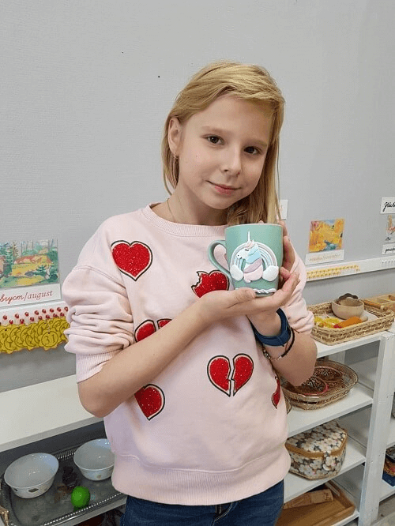

Лепка глиной в г.Мытищи
Волшебная глина (с 7 до 13 лет)
В последнее время большим спросом пользуются изделия, сделанные своими руками. Если Вы хотите, чтоб Ваш ребенок научился создавать настоящие шедевры собственными руками, а также если у Вас есть детки в возрасте страше 7 лет, желающие лепить, добро пожаловать!
Лепить из полимерной глины - это прекрасный способ проводить время и научится новому, погрузившись в мир ярких красок и творческих экспериментов, использую качественно новые материалы.
Можете не сомневаться - детям точно придется по душе такое занятие, ведь они еще с песочницы знают толк с лепке куличиков, а дома творят пластилинновые шедевры. А ведь полимерная глина очень похожа с пластилином, только она более эластичная, а также может подвергаться запеканию.

Лепка из полимерной глины - весьма полезное занятие. Она развивает мелкую моторику; творческое, образное и пространственное мышление; а также воображение, усидчивость и трудолюбие.
Лепим вместе с: Ольгой Федечкиной
© детский центр "Совенок". Все права защищены. 2016-2018